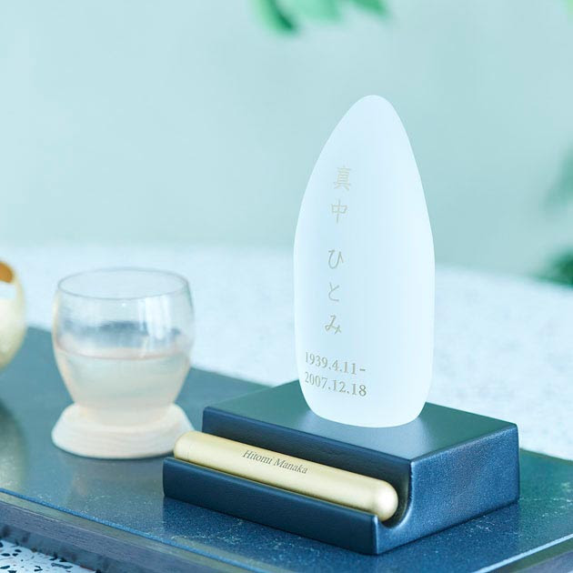

Indies Lifestyle Media 間｜MA
考え方
Notion
研究室
Lab
番組
Channel
道具
Do
Indies Lifestyle Media 間｜MA
Home
考え方
Notion
研究室
Lab
試作
Dictionary
Reference
Research
番組
Channel
間を、喰う
死を、教えてくれ。
異能の表現者たち
準備中
道具
Do
Tips
準備中
Device
Contact
Company
Do
間、個人化への導線
暮らしに間を置く道具を知り、買える場所へ行く。
Device
Tips
準備中

祈りの道具屋 まなか
星牌® 石
¥55,000~
税込
→
該当する道具は、まだ載せていません（順に追加します）。